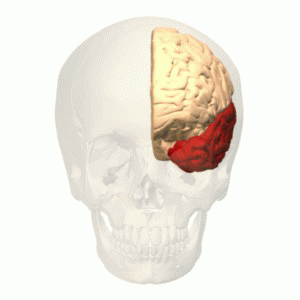

The Temporal Lobe
The temporal lobe is one of the four major lobes in the human brain. It is located beneath the frontal lobe and the parietal lobe. The temporal lobe is also involved in the processing of sensory input and is largely responsible for creating and perserving both consious and long-term memory. Another of its important task is to handle both visual and sound processing that is crucial for both language recognition and object recognition.

Back to start